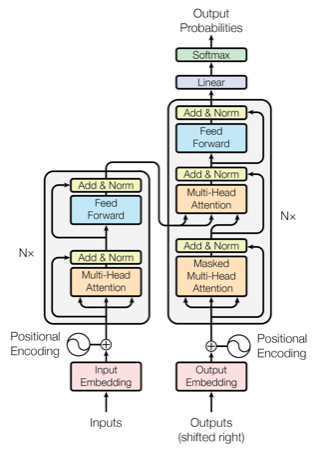

섹션별 요약
Attention Is All You Need
논문 목차에 맞춰 각 절의 핵심을 정리했습니다. 3절에서는 구조도 옆에 모델이 어떻게 작동하는지 짧게 적었습니다.

인코더와 디코더는 각각 여섯 층으로 이루어져 있다. 위치 인코딩으로 단어 순서를 알려 주고, 디코더에서는 다음 단어를 미리 보지 못하도록 가린다.
Vaswani et al., 그림 1Zotero 10.0.x 플러그인
Zotero에 논문을 추가하면 Notion에 연구 노트가 생깁니다. 나만의 노트 템플릿을 만들어 논문을 정리하세요.
최신 버전 변경 사항논문 두 편을 서로 다른 템플릿으로 정리했습니다. 플러그인이 새 논문에 노트의 틀을 잡아 주면, 읽으면서 아래처럼 채워 보세요.
섹션별 요약
논문 목차에 맞춰 각 절의 핵심을 정리했습니다. 3절에서는 구조도 옆에 모델이 어떻게 작동하는지 짧게 적었습니다.

인코더와 디코더는 각각 여섯 층으로 이루어져 있다. 위치 인코딩으로 단어 순서를 알려 주고, 디코더에서는 다음 단어를 미리 보지 못하도록 가린다.
Vaswani et al., 그림 1논문 리뷰
저자가 풀려는 문제부터 실험 결과와 한계까지 살펴봅니다. 이 노트에서는 같은 깊이의 모델끼리 비교했습니다.
| 층 수 | Plain | ResNet |
|---|---|---|
| 18층 | 27.94% | 27.88% |
| 34층 | 28.54% | 25.03% |
두 노트의 전문은 영어로 작성했습니다. 예제 DB를 내 워크스페이스에 복제하면 두 노트를 함께 가져올 수 있습니다.
Zotero 10.0.x에서 사용할 수 있습니다. Notion 계정에는 개인 액세스 토큰을 만들 권한이 필요합니다.
Zotero에서 Tools → Plugins를 열고 톱니바퀴를 누르세요. Install Plugin From File…을 선택한 다음, 내려받은 .xpi 파일을 여세요.
Zotero의 Settings → Zotero2Notion에서 Get token을 누르세요. Notion 페이지가 열리면 논문을 저장할 워크스페이스를 고르고, Notion API 권한을 선택해 개인 액세스 토큰을 만드세요.
Zotero로 돌아와 Personal access token 칸에 토큰을 붙여 넣고 Connect를 누르세요.
새 데이터베이스를 만들려면 New를 누르세요. Notion에 비공개 Zotero2Notion 페이지가 생기고, 그 안에 JournalDB가 만들어집니다.
기존 데이터베이스나 예제 템플릿의 복사본을 쓰려면 Refresh를 누르세요. 목록에서 데이터베이스를 고른 뒤 Use로 연결하세요. Check properties를 누르면 필요한 속성이 갖춰졌는지 확인할 수 있습니다.
필요한 속성이 갖춰지면 My Library에 이미 저장해 둔 논문도 Notion으로 가져옵니다. 그 뒤로는 Zotero를 열어 두면 새로 추가한 논문과 수정한 내용이 자동으로 반영됩니다.
My Library에 저장한 논문의 제목, 저자, 초록 등을 가져옵니다. 태그와 컬렉션도 Notion 속성에 연결하면 함께 표시됩니다. 템플릿에 [zotero_notes]만 적은 줄을 하나 넣으면 논문에 남긴 Zotero 노트도 가져옵니다. 그룹 라이브러리의 문헌, PDF 파일, PDF에만 남긴 주석은 동기화하지 않습니다.
직접 쓴 본문과 읽기 상태는 그대로 남습니다. Zotero에서 가져온 노트는 원본을 수정하면 함께 바뀌니, Notion에서 새로 쓰는 메모는 Zotero Notes 바깥에 적어 두세요.
Notion에서 데이터베이스가 어느 워크스페이스에 있는지 확인하세요. 토큰을 만든 워크스페이스와 같다면 Zotero2Notion 설정에서 Refresh를 누르세요. 목록에 나타나면 선택한 뒤 Use를 눌러 연결하세요.